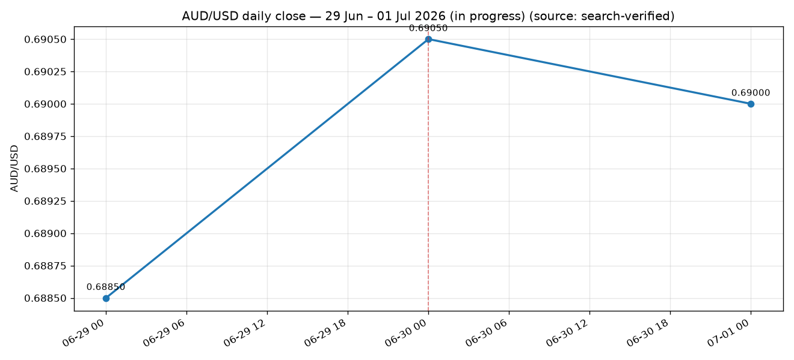

Week so far: 0.68850 → 0.69000 (+15 pips, +0.22%)

| Date | Close | Δ pips | What moved it |
|---|---|---|---|
| Mon 29 Jun | 0.68850 | Near 3-month low; firm USD on Fed rate-hike expectations | |
| Tue 30 Jun | 0.69050 | +20 | Fresh 3-month low intraday then sharp V-shaped bullish reversal; hawkish RBA June minutes (cash rate held 4.35%) |
| Wed 01 Jul | 0.69000 | -5 | In progress (today) - hawkish RBA tone vs firm US data; choppy |
| When (UTC) | Ccy | Event | Actual | Forecast |
|---|---|---|---|---|
| Tue 30 Jun 01:30 | AUD | RBA June meeting minutes | Hawkish; cash rate held 4.35% | |
| Thu 02 Jul 12:30 | USD | Non-Farm Payrolls (June - released early for 4 Jul holiday) | 172K | |
| Thu 02 Jul 12:30 | USD | Unemployment Rate | ||
| Thu 02 Jul 14:00 | USD | ISM Services PMI |
Daily closes are search-verified. For a true per-second breakdown, run forex_backtest.py on a machine with open network access to the Dukascopy tick feed.